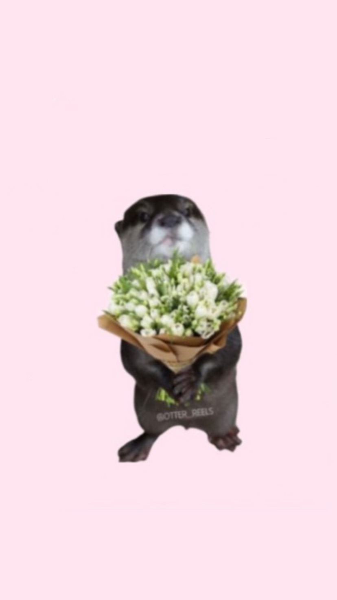

1. Cosa fai appena torni a casa dopo una giornata pesante?
2. Che tipo di coccole preferisci?
3. Il tuo mood quando hai il ciclo?

💌 Grazie per aver cliccato fino a qui…
Volevo solo dirti che ti voglio un bene da morire.
Sei speciale, e anche se non posso sempre starti vicino, ci tengo davvero tanto a te.
Ti penso spesso, anche nei momenti più piccoli.